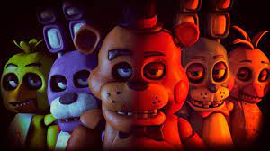

historia de fnaf

m Five Nights at Freddy’s, assim como na sua sequência, Five Nights at Freddy’s 2, controlamos um personagem que aceitou o emprego para trabalhar cinco noites (são sete no segundo jogo) como vigia noturno na Freddy Fazbear’s Pizza. O trabalho consiste em verificar as câmeras de segurança. A tarefa parece simples, mas já na primeira noite, coisas estranhas começam a acontecer.
Porém, a pizzaria, que por fora parece um lugar de diversão com foco no público infantil, possui diversos rumores envolvendo sumiços de crianças e até homicídios. Todos os rumores cercam os bonecos usados para animar a pizzaria, os “animatrônicos”. Todos os rumores apontados aqui, como parte da história real do jogo, foram retirados do próprio game. Esses rumores podem ser encontrados em artigos que estão grudados nas paredes da pizzaria.